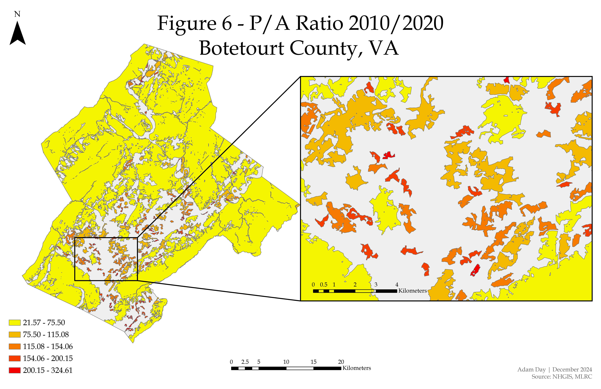

Habitat Fragmentation in Botetourt County, VA; A Temporal GIS Study on Land Use Change
Adam Day | December, 2024
ABSTRACT
This study investigates habitat fragmentation caused by land use change in Botetourt County, Virginia, over a ten-year period between 2010 and 2020. Using USGS provided National Land Cover Database land cover datasets, coupled with geospatial tools in ArcGIS Pro, changes in the configuration and distribution of land cover were measured, with an emphasis on natural and anthropogenic changes. Land cover data was reclassified into five categories and change detection analysis revealed a 4.6% decrease in total forest cover and a 3.6% increase in anthropogenic land use, primarily driven by urban development and agricultural expansion.
Fragmentation metrics-including patch county, mean patch size, total area, perimeter-to-area ration, and nearest neighbor distance-were calculated to assess shifts in habitat structures and connectivity. Results indicate that over the study period, forest patch count increased from 3,150 to 4,078, while mean forest patch size decreased by over 30%, suggesting growing fragmentation. The mean perimeter-to-area ration of forest patch size increased from 0.183 to 0.267, and average nearest neighbor distance between patches nearly doubled from 154 to 309 meters, indicating a loss of core habitat and connectivity.
These findings highlight a clear trend towards increased fragmentation, particularly in forested areas, as habitat patches became smaller, more isolated, and irregularly shaped. This study demonstrates how GIS can be used to quantify land cover change and support conservation-focused land use planning. The findings provide spatial evidence of the ecological impacts of development and underscore the importance of monitoring fragmentation over time to guide sustainable growth and habitat conservation.
1. INTRODUCTION
1.1 What is Habitat Fragmentation?
Biodiversity is a principal factor in the subject of Ecology and is comprised of many different complicated and multifaceted systems interacting within a larger system. The United Nations defines Biodiversity as “the variety of life on Earth, in all its forms, from gene and bacteria to entire ecosystems such as forests or coral reefs” (United Nations, n.d.). One of the key systems biodiversity is dependent upon is habitat. A habitat encompasses the natural area in which a diverse range of animal species lives and interacts with one another on many distinct levels. According to the UN, a main driver for biodiversity loss is due to human use of land, or development, primarily for food production. When land is developed for human use, the habitats encompassing that land becomes fragmented. This is what is known as “Habitat Fragmentation.”
Habitat fragmentation is a gradual process where the overall size of the habitat is fragmented into smaller areas greatly reducing the area and connectivity of said habitat. The process of habitat fragmentation has been described as when “a large expanse of habitat is transformed into a number of smaller patches of smaller total area, isolated from each other by a matrix of habitats unlike the original” (Fahrig, 2003). One of the outcomes of habitat fragmentation is the loss of connectivity within a larger habitat and ecosystem known as the patch isolation effect. The patch isolation effect is “a measure of the lack of habitat in the landscape surrounding the patch” (Fahrig, 2003). The patch isolation effect behaves similarly to a remote island disconnected from outside communication. Transportation of goods and services to the island are difficult and the island is limited to only it is local resources. The same result occurs for species within an isolated habitat patch impacting overall the health and sustainability of the local ecosystem. A 2004 study found that fragmentation due to patch isolation can have far reaching effects in plants including but not limited to reduced genetic drift, reduction in reproductive success, and increased mutations (Lienert, 2004). Another study from 2018 titled “Assessing habitat loss and fragmentation and their effects on population viability of forest specialist birds: Linking biogeographical and population approaches” used a local, well studied endemic bird to measure population decline in relation to habitat fragmentation, concluding that with loss of habitat and forest cover, a reduction of population carrying capacity and pairs on viable populations was identified (Carvajal et al., 2018).
Habitat fragmentation can be cause by many natural things. For example, natural disasters such as wildfires, floods, or volcanic eruptions can significantly alter the local geography of a region containing a habitat. As a result, the habitat can be reduced and fragmented. While natural occurrences do cause habitat fragmentation, anthropogenic activities are a known key driver of habitat fragmentation. A study published in 2020 titled “Human-induced habitat fragmentation effects on connectivity, diversity, and population persistence of an endemic fish, Percilia irwinin, in the Bibo River basin (Chile)” found that hydroelectric dams can be a cause habitat fragmentation. This specific river basin in Chile was the focus of the study due to its considerable number of hydroelectric dams. The study found that “Evidence of population extirpation was found in two river stretches limited by upstream and downstream dams” (Valenzuela-Aguayo et al., 2020). Additionally, the “results suggest a significant vulnerability of P. irwini populations to future dam development and demonstrate the importance of studying basin-wide data sets with genetic metrics to understand the strength and direction of anthropogenic impacts on fish populations” (Valenzuela-Aguayo et al., 2020).
Another major driver habitat fragmentation is urban sprawl. Urban sprawl can be described as land which is cleared for residential or commercial developments, industrial development, or infrastructure and encroaches on undeveloped natural areas. A common result of urban sprawl is habitat fragmentation. One study from 2012 found that the sprawling development in Atlanta Georgia over a period of 40 years saw fragmentation and loss of forest cover. As a result, it concluded that species were impacted by the sprawl in numerous ways, and people’s natural affection toward nature was degraded (Miller, 2012). Urban sprawl and development are a key factor for the selection of Botetourt County, VA for use in this study.
1.2 Study Area: Botetourt County, VA
The 2010 Botetourt County Comprehensive Plan states that Agricultural and Forested Lands account for approximately 69.1% of total land cover in 2010. Agricultural practices have been the main economic driver historically in Botetourt County for a number of years. As stated in the plan, this rural nature of the county has become an attractive location for residential development over time and was expected to have impacts on conversion of agricultural land into medium-density suburban development. Therefore, it is to be expected that with the increase in demand for development, clearing of land for said development will result in habitat fragmentation over a period of time.
1.3 Role of GIS in Habitat Fragmentation Studies
Geographical Information Systems (GIS) is a powerful tool which can be used to track changes in land use over periods of time. For example, land use/land cover changes in the Yarmouk River Basin were analyzed over a period of 22 years in a 2019 study titled “Assessment of land use/land cover change and its environmental impacts using remote sensing and GIS techniques, Yarmouk River Basin, north Jordan”. The study took publicly available Landsat 5 data from the years 1987 and 2009 and classified them to assign numerical values to each pixel based on vegetation coverage. From here, they used a Patch Analysis tool to determine various metrics for the vegetation cover. Ultimately, the study found that agricultural areas and urbanization were the main land uses that underwent expansion with a reduction in forest, rangeland, and bareland. From 1987 to 2009 natural land coverage was reduced by approximately 39.5%. The paper notes that “the decrease in rangeland and forest implies habitat loss and fragmentation, whereas the increase in agricultural and urban areas indicates agricultural expansion and urban sprawl” (Obeidat et al., 2019). The focus of this paper will be to approach land use change and development within Botetourt County, VA over a 10-year period and measure the resulting habitat fragmentation over this period of time.
1.4 Objectives and Research Questions
As previously explained, habitat fragmentation is an outcome of land use change and development. With the rural nature of Botetourt County and its propensity to be developed for residential use, this makes it an ideal choice for this particular study. This paper aims to answer the following question: “How has land use change and development fragmented the habitats in Botetourt County.” By using GIS, the outcome of the study intends to provide a measure of habitat fragmentation within the county.
2. METHODS
2.1 Data Collection and Preparation
This analysis began by obtaining county shapefile data from the IPUMS National Historical Geographic Information System database. The NAD 1983 UTM Zone 17N was used as the spatial refence system for this analysis as this spatial system is geographically relevant to the area of study. The most recent GIS shapefile data set from 2022 was used for the backdrop for this analysis as county boundary data typically remains consistent yearly. The 2022 county layer shapefile was imported into the GIS, utilizing the Select by Attribute feature to select for Botetourt County, VA. Once the Botetourt County, VA shape feature was selected, it was exported into its own feature layer which served as the template for future datasets.
Using the Multi-Resolution Land Characteristics (MRLC) Consortium database, land cover data of the United States from 2010 and 2020 was obtained and added to the GIS. Using the Botetourt County feature layer as the template, the Extract by Mask tool removed all raster data outside of Botetourt County while maintaining all stored land cover classifications provided with the data. This generated two raster files showing all land cover type, with MRLC delineated classification types, from 2010 and 2020. Using the Reclassify tool, the MRLC land cover classifications were then reclassified to the following categories to match the premise of this analysis:
2.2 Land Cover Change Detection
After the land cover data was reclassified for both years, the Raster to Poly tool was used to convert both reclassified raster layers into two new features layers with polygons. The goal of this was to convert each reclassified land cover data set into a measurable feature layer where each unique polygon (fragment) would be assigned to one of the five land cover reclassifications categories which could be then further measured. Once the two new feature layers were created, a new field was added to both the 2010 and 2020 attribute tables labeled “Area” and the geometry for each of the polygons was calculated using hectares as the unit of measurement. After calculating the geometry for both the 2010 and 2020 feature layers, the Summary Statistics tool was used to calculate the total fragment count, mean fragment size, and total land cover area for each of the five land cover classifications. Table 1 & Table 2 below show the results from these calculations.
In order to differentiate between natural land cover type and human based land cover type, both the 2010 and 2020 reclassified land cover rasters were then reclassified again into two broader categories: Natural (1) and Anthropogenic (2). Using this broader reclassification method, each of the five categories were reclassified as the following:
These two rasters can be seen below in Figure 2. Following the same steps as before, these two reclassified rasters were converted to polygons and then measured and calculated to find the fragment count, mean fragment size, and total land cover area in hectares to quantify how land use change has occurred between 2010 and 2020. Figure 3 below show a visual representation of this change. Table 3 and Table 4 below show the metrics behind this change.
Using the Change Detection Tool between the 2010 and 2020 land cover rasters, a new raster was created showing areas of land where land change between these two classifications occurs in either direction. As before, following the same steps for the previous layers, measurements and calculations were made for this raster and Table 5 below shows the outcome of this analysis.
2.3 Fragmentation Analysis
To further measure the rate of habitat fragmentation withing Botetourt County from 2010 to 2020, two rasters were created where we selected for cells containing only forest classification values (1). This provided us with two rasters showing forest cover in 2010 and 2020. Figure 4 below visualizes this data. Using these layers, we again converted both rasters into polygons using the Raster to Poly tool then calculated the area in hectares for each of the layers. In this analysis, we assumed 10- hectares of forested land cover as suitable “habitat”, therefore we performed a Select by Attribute query selected for all polygons greater than or equal to 10 hectares. This provided us with a suitable habitat layer for both 2010 and 2020 which can be seen below in Figure 5. Using the Summary Statistics tool, we calculated the total suitable area for 2010 and 2020. Results for this are presented in Table 6 below.
Edge effect occurs when the number of edges within a fragment increases. This can be measured by calculating the Perimeter-to-Area Ratio (P/A Ratio) where higher P/A ratio values indicate fragmented patches with higher edge counts and lower values indicating more compact patches. To measure the edge effect for forest layers, we took both the 2010 and 2020 layers and created two new fields in each attribute table which calculated the perimeter in meters and area in hectares for each polygon. Then, using the Field Calculator, we used the following formula to calculate for the P/A Ratio:
Results from the P/A Ratio can be found below in the results section of the paper along with Figure 6, which shows a visual representation of this data classified using the Natural Breaks method with 5 classes.
The last analysis performed in this study measured the distance between each suitable habitat patch. This measurement can be insightful to fragmentation patterns because as fragmentation occurs, land cover is lost thereby increasing the distance between each fragment or ‘patch’ wildlife use to traverse the land. Using the Near tool, the suitable habitat layer for 2010 was compared with itself with a new field in the attribute table created which measured the nearest patch in meters. The average of all the measurements was then summarized using the Summary Statistics tool and this process was repeated for the 2020 suitable habitat layer. Results from this analysis are presented below in 6.6 Nearest Distance of the results section. Figure 7 below shows the visual representation of this data classified using the Natural Breaks method with 5 classes.
3. RESULTS
3.1 Land cover Change 2010 - 2020
Table 1 and Table 2 below show the outcomes of the temporal land cover change in Botetourt County, VA between 2010 and 2020.
Table 1 - 2010 Land Cover Data (hectares)
| Land Classification | Fragment Count | Mean Fragment Size (ha) | Total Land Cover Area (ha) |
|---|---|---|---|
| Forest | 3,150 | 33.07 | 104,187.84 |
| Agricultural | 4,092 | 5.81 | 23,801.66 |
| Urban | 4,798 | 2.30 | 11,056.61 |
| Water | 359 | 2.09 | 750.60 |
| Grassland | 1,682 | 0.87 | 1,471.80 |
Table 2 - 2020 Land Cover Data (hectares)
| Land Classification | Fragment Count | Mean Fragment Size (ha) | Total Land Cover Area (ha) |
|---|---|---|---|
| Forest | 3,480 | 29.88 | 10,3986.24 |
| Agricultural | 4,293 | 5.45 | 23,405.02 |
| Urban | 5,151 | 2.25 | 11,617.20 |
| Water | 384 | 2.03 | 781.34 |
| Grassland | 1,532 | 0.96 | 1,479.40 |
Forest fragment count was increased from 3,150 to 3,480, or a net gain of 330 new fragments from 2010 to 2020. Additionally, the average forest fragment size decreased from 33.07 to 29.88, a difference of 3.19 hectares between 2010 and 2020. Lastly, total forested land cove area was reduced from 104,187.84 hectares to 103,986.24 hectares with a sum loss of 201.60 hectares over the ten-year period. This suggests that as forest land is lost, new fragments are created while the average size of fragments are reduced, leading to an overall reduction in total forest land and suitable habitat.
Between 2010 and 2020, total Urban land fragments increased from 4,798 to 5,151, a difference of 353 fragments, with total Urban land cover area increasing from 11,056.61 hectares to 11,617.20 hectares. This results in a gain of 560.59 hectares of Urban land from 2010 to 2020. An important distinction to consider between urban land cover and forest land cover is that urban land fragmentation does not behave in the same manner as forested land fragmentation. While an increase in forest fragments indicates a loss of forested land due to removal of the natural environment, an increase in urban land fragmentation is the result anthropogenic activity and ultimately encroachment or sprawl into natural areas. New urban fragments often are the direct result of residential or commercial development which further fragments the larger suitable habitat patches they weave into, causing an overall reduction in the size of suitable habitat patches.
3.2 Natural vs Anthropogenic Change
Anthropogenic activity is one of the main drivers of habitat fragmentation. Table 3 and Table 4 below shows total land cover of natural classified land cover types and anthropogenic classified land cover types between 2010 and 2020.
Table 3 - Natural vs Anthropogenic Data 2010
| Land Classification | Fragment Count | Mean Fragment Size (ha) | Total Land Cover Area (ha) |
|---|---|---|---|
| Natural | 2,474 | 42.99 | 106,361.06 |
| Anthropogenic | 3,247 | 10.75 | 34,908.84 |
Table 4 - Natural vs Anthropogenic Data 2020
| Land Classification | Fragment Count | Mean Fragment Size (ha) | Total Land Cover Area (ha) |
|---|---|---|---|
| Natural | 2,706 | 39.24 | 106,192.36 |
| Anthropogenic | 3,438 | 10.20 | 35,077.56 |
Between 2010 and 2020 natural land cover fragment count was increased from 2,474 to 2,706 with the mean fragment size reduced from 42.99 to 39.24 and total natural land cover area reduced from 106,361.06 hectares to 106,192.36 hectares. Meanwhile, anthropogenic land cover fragment count increased from 3,247 to 3,438 with the mean fragment size reduced from 10.75 to 10.20 and total anthropogenic land cover increase from 34,908.84 hectares to 35.077.56 hectares.
Table 5 below shows the measured change of land classifications between natural or anthropogenic.
Table 5 - Natural vs Anthropogenic Change Detection; 2010 & 2020
| Land Type | Fragment Count | Mean Fragment Size (ha) | Total Land Cover Area (ha) |
|---|---|---|---|
| Natural to Anthropogenic | 1,320.42 | 0.21 | 279.49 |
| Anthropogenic to Natural | 956.84 | 0.14 | 130.66 |
| No change | 34.24 | 4,143.01 | 140,863.01 |
Between 2010 and 2020, 1,320.42 fragments were converted from Natural to Anthropogenic land cover, representing 279.49 hectares of change. Compared with the Anthropogenic to Natural land cover type, only 956 fragments were converted resulting a total 130.66 hectares of land regenerated back to its natural state.
4.4 Suitable Habitat Metrics
Suitable habitat identified by measuring 10-hectare patches of forested areas. Table 6 and Table 7 below show the outcomes of these measurements.
Table 6 - Suitable Habitat Metrics: 2010
| Patch Count | Patch Size Average | Total Landcover Area (ha) |
|---|---|---|
| 195 | 522.88 | 101,962.40 |
Table 6 - Suitable Habitat Metrics: 2020
| Patch Count | Patch Size Average | Total Landcover Area (ha) |
|---|---|---|
| 191 | 532.23 | 101,656.14 |
Suitable habitat patch count decreased from 195 patches to 191 patches from 2010 and 2020, which represents a total land cover area from 101,962.40 hectares in 2010 to 101,656.14 hectares in 2020. However, average patch size increased from 522.88 hectares to 532.23 hectares. The increase of the average patch size, when compared to the overall loss of the suitable habitat cover, could be the result of a decrease or loss in the number of smaller forested patches or the result of regeneration of the area between smaller and larger patches which connects them forming an overall larger patch.
3.5 Perimeter-to-Area Ratio
As previously described, the P/A Ratio is a useful tool which measures how fragmented a patch is by count of the edges divided by the perimeter of the patch. A higher P/A Ratio indicates more edges per patch and a lower P/A Ratio indicates less edges per patch. In 2010, the P/A Ratio for the suitable habitat (<= 10 hectares of forested land) was 133.1 and in 2020 the P/A Ratio increased slightly to 133.7. This increase, while minor, indicates that the number of edges per patch does increase over the ten-year period, suggesting that fragmentation has occurred within the ten-year time period. Note, Figure 6 depicts data from 2010 only, as the difference between averages from both years was almost negatable from a visualization standpoint. Therefore, the 2010 data is sufficient to visually represent both 2010 and 2020 P/A ratios.
3.6 Nearest Distance
Nearest distance was used to the average distance between each 10 hectares of forested land in 2010 and 2020. As previously discussed, a higher nearest distance average indicates a further travel distance between each patch. As fragmentation occurs, patch size is reduced, and the number of available ‘suitable’ forest patches is reduced, thus increasing the distance between each existing patch. In 2010 the average nearest distance measurement between suitable forest patches was 13.85 meters while the average dropped to 11.94 in 2020. While this reduction in the average does suggest that fragments are closer together after 10 years, it is ultimately contradicted by the land cover change data found in the earlier sections. This outcome is likely the result of more fragments being created over time, thus increasing the ‘spread’ of these fragments, which would likely impact the average nearest distance. Future research and further analysis will be needed to confirm this hypothesis.
4. DISCUSSION
The result from this analysis suggests that habitat fragmentation within Botetourt County has occurred between 2010 and 2020. Several key indicators emerged from this study which provide insight into the broader impacts of land use change and development within Botetourt County, VA.
4.1 Habitat Fragmentation Trends
The increase in forest fragment count, as shown in Table 1 and Table 2, coupled with the reduction in the average fragment size and total forested land cover area point to ongoing fragmentation within natural habitats. The fragmentation identified here suggests that these forested areas are being broken down into smaller, isolated patches, likely as a result of urban and agricultural expansion. These changes directly align with county level trend of land use change driven by anthropogenic activity as reported by the 2010 Botetourt County comprehensive plan.
This increase in urban land cover, along with its association to fragmentation, further supports the hypothesis that urban sprawl is a key driving force behind habitat loss within the county. The spatial pattern of increased fragmentation, coupled with the higher perimeter-to-area (P/A ratio), indicates that forest edges are being encroached upon, leading to a reduction of core habitat areas which are key to sustaining biodiversity.
4.2 Natural vs. Anthropogenic Landcover
The changing landscape from natural landcover into anthropogenic landcover reveals a gradual conversion of the natural areas into urban developed ones. The net loss of natural land cover (279.49 hectares) to urban and agricultural land cover points to a need for more aggressive conservation efforts. Despite regeneration occurring in various areas throughout the county (130.66) hectares, this regeneration is minor and does not offset the losses suffered by the natural habitat.
4.3 Suitability for Habitat for Wildlife
While the suitable habitat portion of this analysis found a slight reduction in total landcover area and patch count, an increase in average patch size was discovered. However, as mentioned earlier, this finding is contradicted by the land cover data change and likely is the result of the loss of smaller forest fragments along with the merging of adjacent patches through natural regeneration. Regardless, this process and outcome will not counteract the negative effects of reduced total habitat area and increased fragmentation.
4.4 Connectivity and Edge Effect
As previously discussed, the reduction of nearest distance average from suitable habitat forest patches from 13.85 meters in 2010 to 11.94 meters in 2020 seems to contradict the findings from the land cover data change and expected outcomes of increased patch isolation. This finding could indicate the formation of smaller forest fragments which are located closer together, which would skew the average. This outcome highlights how variable dependent and complex analysis such as these are and underscore the need for additional future analysis including corridor mapping or least-cost path modeling. Further research would be needed to accomplish this which would require identification of specific species native to the county along with their behavior patterns.
With the slight increase in the P/A ratio, this reflects a rise in edge effect over the ten-year period, causing further fragmentation and reduction of their ecological viability. These changes align with the hypothesis that habitat fragmentation reduces core habitat availability, which could potentially impact species dependent on core forest environments (Fahrig, 2003).
4.5 Implications for Conservation
The trends observed in this analysis, coupled with the nature of habitat fragmentation and loss, emphasize the need for future conservation efforts in Botetourt County. This would include prioritizing the conservation of larger, contiguous patches of forest, restoring smaller fragmented areas, and mitigating the negative effects from urban sprawl into these natural environments. These strategies scratch the surface in helping preserve the ecological integrity for the county and could lay the foundations for future ecological conservation and restoration efforts within Botetourt County. Afterall, our natural resources and environments are finite. It is our responsibility as humans to use our knowledge and technology to be the best steward to the Earth as we can be.
5. LISTED FIGURES

Figure1: Land Cover Map | Botetourt County, VA
Figure 2: Natural vs Anthropogenic Land Cover
Figure 3: Natural vs Anthropogenic Change
Figure 4: Forested Land Cover Map

Figure 5: Suitable Habitat (10 Hectares Forest)
Figure 6: P/A Ratio 2010/2020
Figure 7: Average Near Distance
6. REFERENCES
Carvajal, M. A., Sieving, K. E., Alaniz, A. J., Smith-Ramírez, C., & Syphard, A. (2018). Assessing habitat loss and fragmentation and their effects on population viability of forest specialist birds: Linking biogeographical and population approaches. Diversity & Distributions, 24(5/6), 820–830. https://doi.org/10.1111/ddi.12730
Fahrig, L. (2003). EFFECTS OF HABITAT FRAGMENTATION ON BIODIVERSITY. Annual Review of Ecology, Evolution, and Systematics, 34(1), 487–515. https://doi.org/10.1146/annurev.ecolsys.34.011802.132419
Lienert, J. (2004). Habitat fragmentation effects on fitness of plant populations – a review. Journal for Nature Conservation, 12(1), 53–72. https://doi.org/10.1016/j.jnc.2003.07.002
Miller, M. D. (2012). The impacts of Atlanta’s urban sprawl on forest cover and fragmentation. Applied Geography (Sevenoaks), 34, 171–179. https://doi.org/10.1016/j.apgeog.2011.11.010
Murayama, Y., Murayama, Y., Simwanda, M., & Ranagalage, M. (2021). Spatio-Temporal Analysis of Urbanization Using GIS and Remote Sensing in Developing Countries. MDPI - Multidisciplinary Digital Publishing Institute.
Obeidat, M., Awawdeh, M., & Lababneh, A. (2019). Assessment of land use/land cover change and its environmental impacts using remote sensing and GIS techniques, Yarmouk River Basin, north Jordan. Arabian Journal of Geosciences, 12(22), 1–15. https://doi.org/10.1007/s12517-019-4905-z
United Nations. (n.d.). Biodiversity - our strongest natural defense against climate change. United Nations. https://www.un.org/en/climatechange/science/climate-issues/biodiversity
Valenzuela‐Aguayo, F., McCracken, G. R., Manosalva, A., Habit, E., & Ruzzante, D. E. (2020). Humaninduced habitat fragmentation effects on connectivity, diversity, and population persistence of an endemic fish, Percilia irwini, in the Biobío River basin (Chile). Evolutionary Applications, 13(4), 794– 807. https://doi.org/10.1111/eva.12901